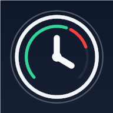

Sincronizzato
Se fermi il timer dal web, anche il tool desktop si arresta senza duplicare le ore.
Per Windows 10 e 11
Avvia il timer senza tenere aperta la dashboard. Progetto, attività e ore restano sincronizzati con Arch Time Pro.
Arch Time Pro
Registra tempo

PROGETTO
Ristrutturazione appartamento
ATTIVITÀ
Progetto esecutivo
02:18:42
Se fermi il timer dal web, anche il tool desktop si arresta senza duplicare le ore.
Il controllo automatico resta attivo anche quando il timer viene avviato dal desktop.
Durante il lavoro si riduce a un contatore compatto vicino alla barra delle applicazioni.
Richiede una connessione internet e Microsoft Edge WebView2, normalmente già presente su Windows 10 e 11. L'installer verifica automaticamente il requisito.